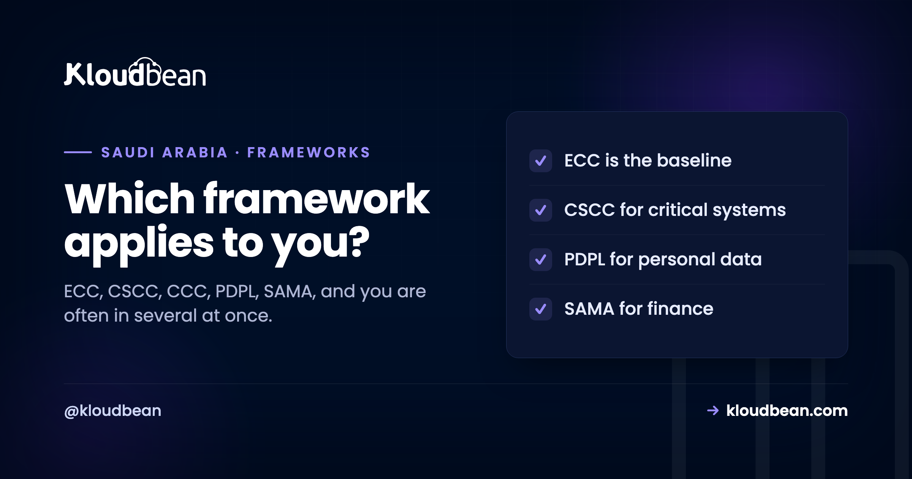

Saudi Cybersecurity Frameworks Explained: Which One Applies to You

Anyone building or running regulated systems in Saudi Arabia runs into an alphabet soup fast: ECC, CSCC, CCC, PDPL, SAMA CSF. They come from different authorities, they overlap in places, and the common mistake is treating them as one big blur or assuming you only have to deal with one. You often have to deal with several at once. This guide is the map: who issues each framework, who it actually applies to, how they relate, and where your hosting choices fit across all of them. It links out to the deep dive on each, so use it to work out your scope first, then go deep only where you need to.
It depends on who you are, and more than one can apply. The National Cybersecurity Authority (NCA) issues the Essential Cybersecurity Controls (ECC) as the broad baseline, the Critical Systems Cybersecurity Controls (CSCC) for critical national systems, and the Cloud Cybersecurity Controls (CCC) for cloud. The PDPL is the personal-data privacy law, overseen by SDAIA, and applies to anyone handling Saudi residents' personal data. The SAMA Cyber Security Framework applies to financial institutions regulated by the Saudi Central Bank. A Saudi bank, for instance, can be under the ECC, the CSCC, the PDPL, and the SAMA CSF simultaneously.
Two authorities, and a privacy regulator
Start by sorting the frameworks by who issues them, because that tells you who assesses you and why they overlap.
Three bodies matter. The National Cybersecurity Authority (NCA) is the national cybersecurity regulator, and it issues the general and sector-agnostic cybersecurity control frameworks that apply across the Kingdom. The Saudi Central Bank, still widely called SAMA, regulates the financial sector and issues its own cybersecurity framework for the institutions it supervises. And SDAIA, the Saudi Data and Artificial Intelligence Authority, oversees the personal-data privacy law. So a framework's substance often overlaps with another's, encryption, access control, logging, and backups show up everywhere, because good security is universal, but they are issued and assessed by different authorities. That is why a single organisation can owe compliance to more than one at the same time, and why the practical approach is to build a control once and map it to each framework that asks for it.
The NCA frameworks: ECC, CSCC, CCC
The NCA publishes a family of frameworks that build on each other, so it helps to see them as layers.
The Essential Cybersecurity Controls (ECC) are the baseline: the essential controls most in-scope organisations in the Kingdom are expected to meet. They are the foundation the others build on, and the natural starting point, covered in NCA ECC compliant hosting. The Critical Systems Cybersecurity Controls (CSCC) extend the ECC with stricter requirements for critical national systems, the systems whose failure would have national-level impact, and CSCC compliance assumes ECC compliance underneath it; the full walkthrough is in the NCA CSCC guide. The Cloud Cybersecurity Controls (CCC) address cloud computing specifically, with requirements split between the cloud provider and the subscriber, and they are what the CSCC points to when it requires critical systems to be hosted with a compliant cloud, explained in the NCA CCC guide. The NCA maintains further specialised frameworks too, such as data and operational-technology controls, so if your work is specialised it is worth checking the NCA's current catalogue rather than assuming these three are the whole set.
PDPL and SAMA: privacy law and the financial sector
Two more frameworks come from outside the NCA and catch a lot of organisations.
The Personal Data Protection Law (PDPL) is not a cybersecurity control set but a privacy law, overseen by SDAIA. It governs how the personal data of people in Saudi Arabia is collected, processed, and transferred, and it applies to essentially any organisation handling that data, which is a far wider net than the critical-systems frameworks. It is the Kingdom's counterpart to what the GDPR is in Europe, and it is covered in PDPL compliant hosting. The SAMA Cyber Security Framework comes from the Saudi Central Bank and applies to the financial institutions it regulates, banks, insurers, financing companies, payment and fintech firms, measuring them against a maturity model; it is covered in SAMA-compliant hosting. The reason these two matter to the map is that they cut across the NCA frameworks. A fintech is under the SAMA CSF and, because it handles personal data, the PDPL, and possibly the NCA controls too. Scope stacks.
Which framework applies to you
Here is the map in one place. Read down the "who it applies to" column to find yourself, and expect to land in more than one row.
| Framework | Issued by | Applies to | Deep dive |
|---|---|---|---|
| ECC | NCA | Most in-scope organisations (the baseline) | NCA ECC hosting |
| CSCC | NCA | Critical national systems (extends ECC) | NCA CSCC guide |
| CCC | NCA | Cloud providers and their subscribers | NCA CCC guide |
| PDPL | SDAIA | Anyone handling Saudi personal data | PDPL hosting |
| SAMA CSF | Saudi Central Bank | Regulated financial institutions | SAMA hosting |
A quick read of the table: almost everyone touches the ECC baseline; if you handle personal data you add the PDPL; if you are a financial institution you add the SAMA CSF; if your systems are nationally critical you add the CSCC; and the CCC governs the cloud you run on regardless. The point is not to memorise all of them, it is to identify your two or three and then build once for their shared substance.
The thread through all of them: infrastructure alignment, not certification
Whatever combination applies to you, the way hosting fits is the same across every one, and it is worth stating plainly.
None of these frameworks is satisfied by hosting alone, and no honest provider claims otherwise. Each is assessed against your organisation, its governance, its people, its processes, and its formal engagement with the relevant authority. What a managed platform can do, consistently across all of them, is carry the infrastructure-layer controls they share, network isolation, encryption in transit and at rest, controlled privileged access, logging with retention, tested backups, patching on cadence, DDoS protection, plus the in-Kingdom data residency that several of them expect, and hand you the evidence for those. That is the same honest split whether you are mapping the ECC, the CSCC, the PDPL, or the SAMA CSF: the platform provides infrastructure alignment and evidence, and your organisation owns the compliance. Build the shared controls once on infrastructure that supports them, and you have covered the overlapping infrastructure requirement of every framework at the same time. The rest, the governance and the assessment, is yours in each.
More on saudi Cybersecurity Frameworks Explained
Go deep on whichever applies: NCA ECC compliant hosting, the NCA CSCC guide, the NCA CCC guide, PDPL compliant hosting, and SAMA-compliant hosting. For the hosting foundation underneath all of them, cloud hosting in Saudi Arabia and data residency in Saudi Arabia.
Map your frameworks, then build the shared controls once.
Whichever Saudi frameworks apply to you, the infrastructure half overlaps. Kloudbean delivers those shared controls on managed engagements, in-Kingdom on the Dammam region, with evidence as managed reports. Start the conversation at kloudbean.com, and see the foundation in cloud hosting in Saudi Arabia.
One control set, mapped to each framework · In-Kingdom Dammam region · Evidence as managed reports · Governance stays yours
FAQ
What is the difference between the ECC and the CSCC?
Both are NCA frameworks, but the ECC is the broad baseline that most in-scope organisations meet, while the CSCC adds stricter requirements specifically for critical national systems and assumes ECC compliance underneath it. Think of the ECC as the foundation and the CSCC as an extension layered on top for the highest-impact systems. An organisation running a critical system is expected to satisfy both, not to choose between them.
Is the PDPL a cybersecurity framework?
Not exactly. The PDPL is Saudi Arabia's personal-data privacy law, overseen by SDAIA, and it governs how personal data is collected, processed, and transferred rather than setting technical security controls the way the NCA frameworks do. It is closer in nature to the GDPR than to the ECC. Security and privacy overlap, so good data protection supports both, but the PDPL and the cybersecurity control frameworks are distinct obligations from different authorities.
Do I have to comply with more than one framework?
Very often, yes. The frameworks come from different authorities and target different things, so scope stacks. A financial institution can be under the SAMA CSF, the PDPL for the personal data it holds, and the NCA's ECC or CSCC for its systems, all at once. Rather than a single choice, the realistic approach is to identify every framework in scope for you and build overlapping controls once, mapping each to the frameworks that require it.
Who issues the SAMA Cyber Security Framework?
The Saudi Central Bank, historically known as the Saudi Arabian Monetary Authority, which is why the acronym SAMA persists. It regulates the financial sector, so its framework applies to the banks, insurers, financing companies, and payment and fintech firms it supervises. It is separate from the NCA frameworks, and a financial institution typically falls under both the SAMA CSF and the relevant NCA controls at the same time.
What is the CCC and how does it relate to the others?
The Cloud Cybersecurity Controls are the NCA's framework for cloud computing, with requirements split between the cloud provider and the subscriber. It relates to the others through the CSCC, which requires critical systems to be hosted with a CCC-compliant cloud. So while the ECC and CSCC are about your systems, the CCC is about the cloud they run on, and the two connect at the point where hosting becomes a compliance decision rather than a preference.
Does hosting in Saudi Arabia satisfy these frameworks?
In-Kingdom hosting helps with the residency expectations several frameworks carry, and a managed platform can implement the shared infrastructure controls they require, but hosting alone does not make you compliant with any of them. Each framework is assessed against your organisation's governance, processes, and people. Hosting provides infrastructure alignment and evidence for the technical layer; the compliance itself, and the engagement with the authority, remain your organisation's responsibility.
Which framework should I start with?
Usually the ECC, because it is the baseline the others build on, unless a sector framework clearly dominates your obligations, in which case start where your regulator focuses. A financial institution will pay early attention to the SAMA CSF, a critical-systems operator to the CSCC, and any organisation handling personal data to the PDPL. Identify your two or three in-scope frameworks first, then sequence the work by which authority assesses you and when.
Are these frameworks public?
The NCA's core control frameworks are published openly and can be referenced directly, and the PDPL is published law. The SAMA framework is issued to the financial institutions it regulates. Because all of these are maintained and periodically updated, the safe practice is to work from the current version on the issuing authority's guidance rather than a cached copy, especially when citing specific control numbers in your own documentation.